과일진열쇼케이스
과일쇼케이스 가격, 견적이 달라지는 다섯 가지 지점
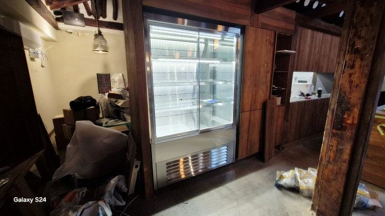
과일쇼케이스 가격은 가로 길이보다 내부 습도를 어떻게 지키는지, 박스째 올릴 수 있는 진열 단 구조인지, 문을 다는지 여부에서 크게 갈립니다. 견적을 비교할 때는 제작비와 함께 운송·설치비가 들어갔는지까지 같은 조건으로 맞춰 보셔야 합니다.
안녕하세요. 과일가게와 청과 매장에 들어가는 진열 냉장 설비를 맞춤으로 만드는 한성쇼케이스입니다.
과일가게를 준비하시는 사장님들이 견적서를 두 장쯤 받아 보시면 꼭 이렇게 물으십니다. "길이도 비슷한데 왜 한쪽이 훨씬 비싸게 나왔을까요?"
과일은 진열해 둔 뒤에도 숨을 쉬는 상품이라, 단순히 차게만 해 주는 냉장고와는 들어가는 구조가 다릅니다.
그 차이가 견적서의 금액 차이로 나타나는 경우가 많습니다.
오늘은 과일쇼케이스 견적에서 금액을 실제로 가르는 지점과, 비교할 때 빠뜨리기 쉬운 항목을 순서대로 짚어 보겠습니다.
1. 습도를 지키는 구조인지
과일쇼케이스에서 가장 먼저 보셔야 할 부분은 내부 수분 환경입니다. 습도가 지나치면 과일 표면에 물이 맺혀 조직이 물러지고, 반대로 너무 건조하면 껍질이 쭈글해지고 윤기가 빠집니다.
손님 눈에는 둘 다 오래된 과일로 보이죠.
그래서 찬 바람이 과일에 직접 닿지 않게 흐름을 잡아 주는 구조, 유리에 김이 서리지 않게 하는 사양이 들어가면 금액이 올라갑니다.
견적서에 냉각 방식과 바람 흐름 설명이 빠져 있다면 꼭 물어보세요.
- 냉각 방식이 간냉식인지 직냉식인지 적어 달라고 하세요.
- 유리 김서림 방지 사양이 포함됐는지 확인하세요.
- 딸기·포도처럼 무르기 쉬운 품목을 주로 파는지 미리 말씀해 주세요.
2. 진열 단 구성과 하중
과일은 낱개보다 바구니나 박스 단위로 올리는 일이 많아 선반이 받는 무게가 큽니다. 계단식으로 단을 몇 개 둘지, 앞쪽으로 기울여 손님에게 과일 윗면이 보이게 할지에 따라 프레임 구조와 자재가 달라집니다.
제철마다 품목이 바뀌는 업종이라 선반 높이를 조절할 수 있게 해 두면 편하지만, 그만큼 부품이 늘어납니다.
꼭 필요한 단 수부터 정하고 나머지를 옵션으로 두면 견적을 정리하기 쉽습니다.
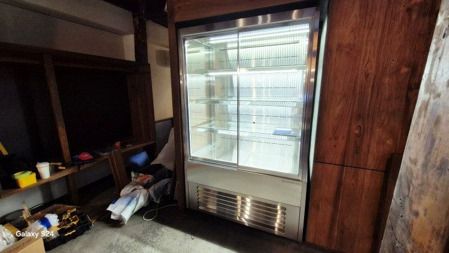
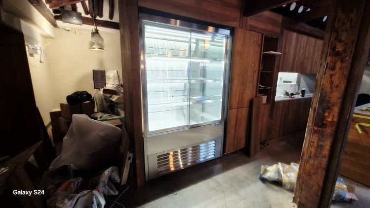
3. 오픈형과 도어형
손님이 직접 집어 가는 오픈형은 고르는 재미가 있어 회전이 빠른 대신, 냉기가 앞으로 빠져나가 냉각 용량을 넉넉히 잡아야 합니다.
문을 다는 도어형은 냉기를 붙잡아 두기 좋지만 문 프레임과 경첩, 유리가 추가됩니다.
선물용 과일 바구니처럼 단가가 높고 오래 두는 상품은 도어형, 그날 다 파는 제철 과일은 오픈형으로 나눠 두는 매장도 많습니다.
판매 방식을 먼저 정하시면 불필요한 사양을 덜어 낼 수 있습니다.
4. 조명 색과 외관 마감
과일은 색이 곧 맛으로 읽히는 상품이라 조명이 판매에 직접 영향을 줍니다. 붉은 과일을 살리는 색, 초록 과일을 산뜻하게 보이게 하는 색이 다르기 때문에 구간별로 조명을 나누면 그만큼 작업이 늘어납니다.
프레임 색상이나 우드·스텐 같은 마감, 상단 간판 자리도 금액을 바꾸는 항목입니다. 견적 한 장에는 들어가 있고 다른 한 장에는 빠진 경우가 많으니 항목별로 표를 만들어 비교해 보세요.
- 조명 색과 설치 위치를 견적서에 적어 달라고 하세요.
- 프레임 색상, 마감 소재가 기본인지 옵션인지 구분하세요.
5. 운송·설치비와 A/S 범위
제작비만 보고 비교하면 나중에 금액이 달라질 수 있습니다. 지역에 따라 운송비가 다르고, 출입문이 좁거나 엘리베이터를 쓸 수 없는 매장은 추가 인력이나 장비가 필요할 수 있습니다.
설치 뒤 고장이 나면 누가 와서 고쳐 주는지도 금액만큼 중요합니다. 한성쇼케이스는 전국 240여 개 A/S 센터를 운영하고 있어, 지방 매장도 가까운 곳에서 접수하실 수 있습니다.
체크리스트
- 냉각 방식과 김서림 방지 유리 포함 여부
- 진열 단 수와 선반 하중
- 오픈형·도어형 중 판매 방식에 맞는 구조
- 조명 색과 외관 마감 옵션 구분
- 운송·설치비 포함 여부와 반입 경로
- A/S 접수 방법과 범위
현장에서 자주 보는 경우: 제작비만 비교하고 설치 조건을 빼먹을 때
창업 비용이 빠듯하면 냉장 설비부터 줄여 보려는 사장님이 많습니다. 그런데 막상 견적을 받아 보면 제작비만 적힌 곳과 운송·설치비까지 묶어 적은 곳이 섞여 있어, 싼 쪽을 골랐다가 설치 날 추가 비용을 듣게 되는 일이 생깁니다.
상담할 때 저희가 꼭 여쭤보는 질문은 세 가지입니다. 지역에 따라 운송·설치비가 얼마나 달라지는지, 출입문이 좁거나 엘리베이터가 없을 때 인력이나 장비가 더 필요한지, 지금 받은 견적에 제작비와 설치비, 운송비가 모두 들어 있는지입니다.
설치할 자리를 사진으로 보내 주시면 이 부분까지 함께 살펴보고 안내해 드립니다.
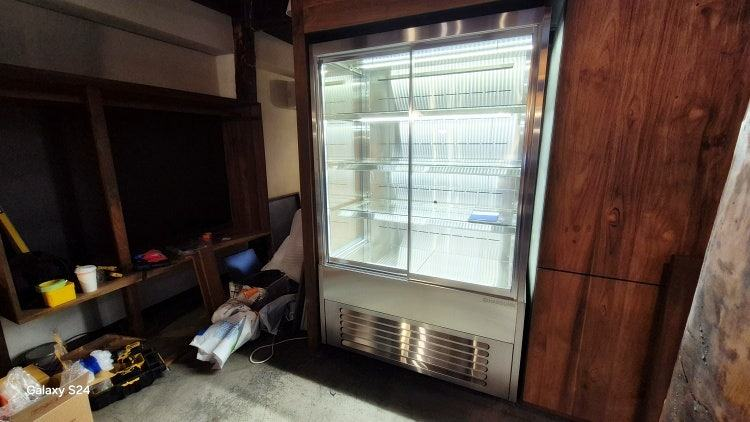
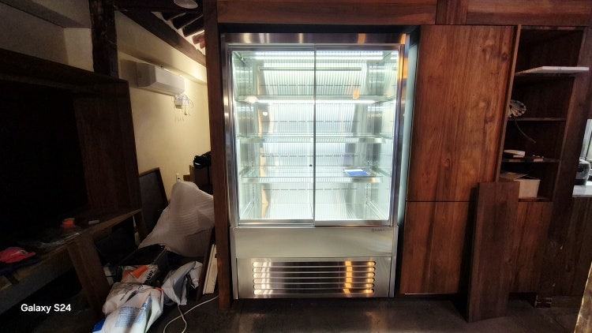
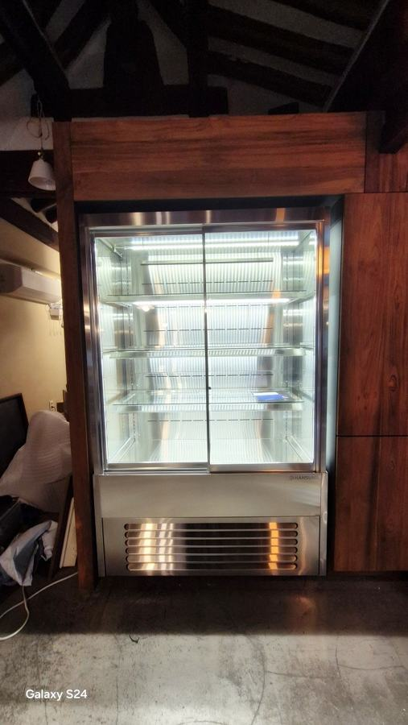
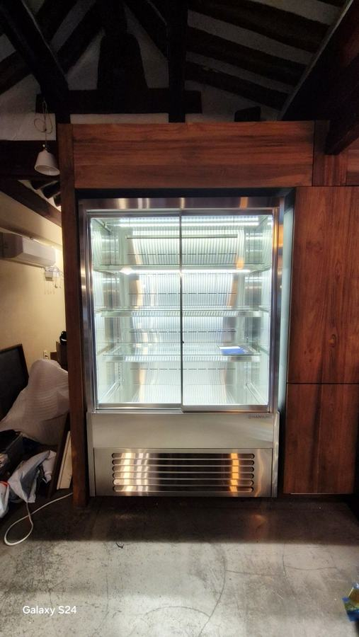
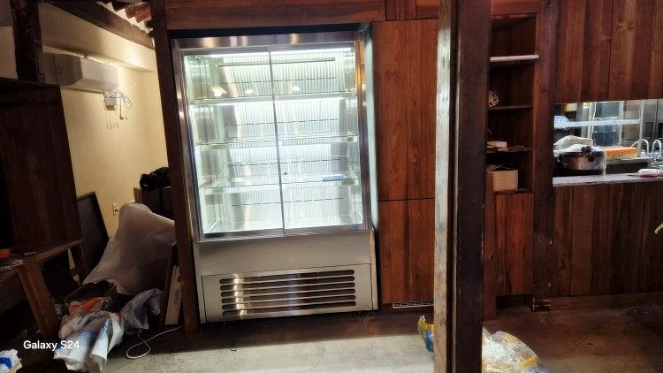
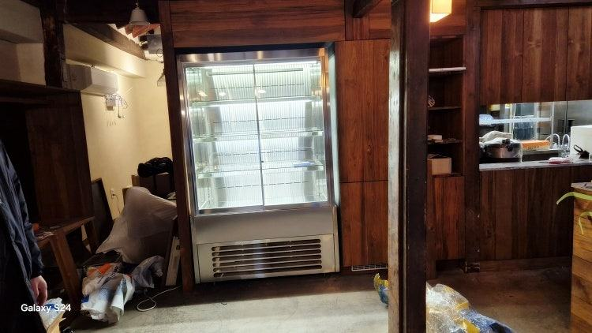
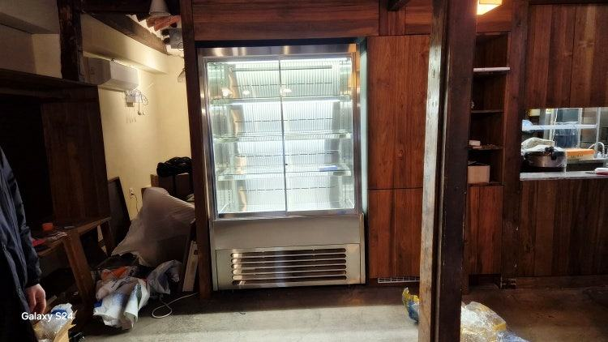
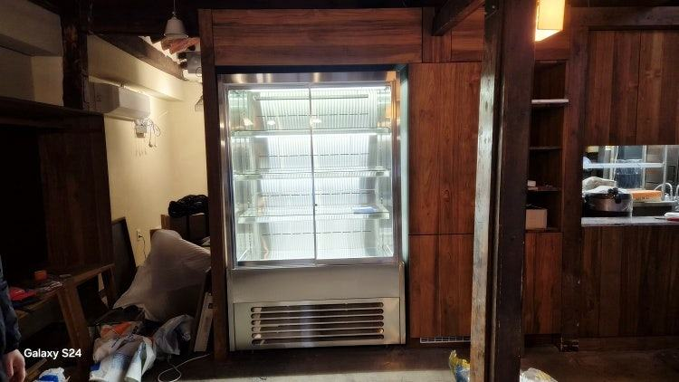
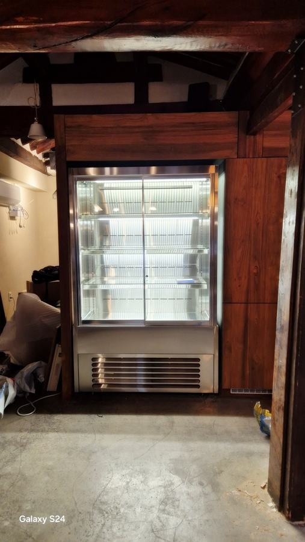

자주 묻는 질문
과일쇼케이스를 일반 음료 냉장고로 대신해도 되나요?
음료 냉장고는 캔과 병을 빠르게 식히는 데 맞춰져 있어 바람이 강하고 건조한 편입니다. 과일을 오래 진열하면 껍질이 마르고 윤기가 빠질 수 있어, 과일 비중이 큰 매장이라면 전용 구조를 권해 드립니다.
견적을 받기 전에 무엇을 준비하면 좋을까요?
설치 자리의 폭·깊이·높이, 주로 팔 과일 종류, 박스째 올릴지 낱개로 진열할지를 정리해 주시면 됩니다.
매장 사진이 있으면 동선과 반입 경로까지 함께 볼 수 있습니다.
지방 매장도 설치와 A/S가 되나요?
가능합니다. 전국 240여 개 A/S 센터를 통해 접수하실 수 있고, 운송·설치 조건은 지역과 반입 경로에 따라 견적 단계에서 따로 안내해 드립니다.
매장 조건에 맞춰 만드는 한성쇼케이스
원하시는 제품 사진과 설치할 공간 사진만 보내 주셔도 매장에 맞는 구성을 추천해 드립니다.
- 전국 240여 개 A/S 전담 센터 운영
- 본사 대량 자재 매입으로 품질 대비 합리적인 가격
- 유럽제·삼성 냉각 콤프레셔 적용
- 국내 최초 쇼케이스 전문 디자이너 상주
매장 폭과 원하는 진열 구성을 알려 주세요. 실측과 견적을 안내해 드립니다.
031-986-2458